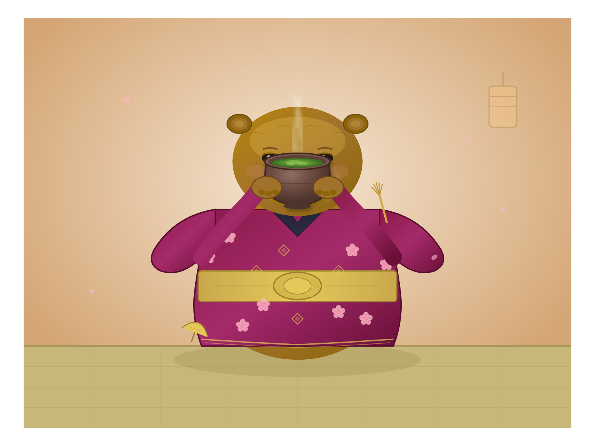

iter 0 0.95 runtime okdonetouched 1
intent
This iteration should produce the core subject: a recognizable capybara with its characteristic blunt snout and relaxed posture, dressed in a detailed traditional kimono with visible patterns, actively drinking matcha tea from a ceramic bowl. The composition must clearly show all three key elements—the animal, the clothing, and the beverage—interacting naturally within a single cohesive scene to satisfy the prompt's primary requirements.
judge critique
The artifact successfully includes all required elements: a recognizable capybara, a detailed kimono, matcha tea in a bowl, and the action of drinking. The composition is coherent and visually appropriate. No significant defects or missing requirements were identified in the first-pass description.
runtime check
artifact.svg parses as XML
commit
iter/0: view diff
21516d74